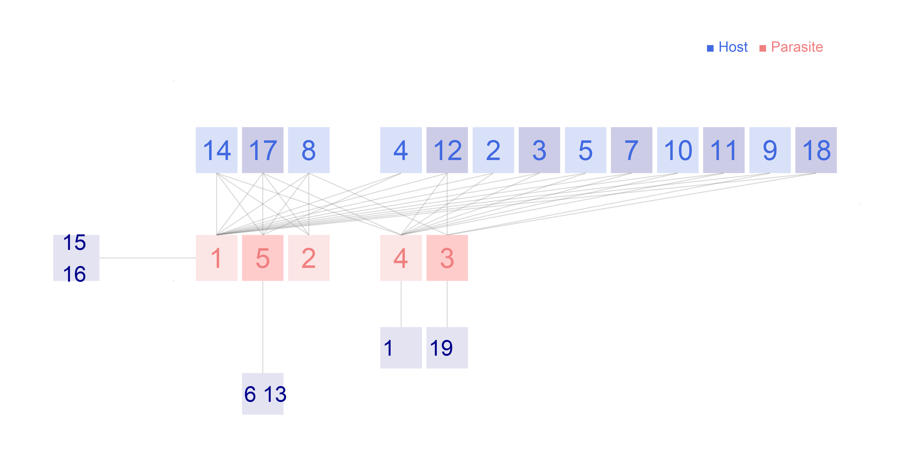

Network: RA_HP_049

Host 1 Amphipsylla marikovskii, 2 Amphipsylla vinogradovi, 3 Ceratophyllus anisus, 4 Ceratophyllus indages, 5 Ctenophthalmus congeneroides, 6 Ctenophthalmus pisticus, 7 Frontopsylla elata, 8 Frontopsylla luculenta, 9 Hystrichopsylla microti, 10 Leptopsylla segnis, 11 Megabothris advenarius, 12 Megabothris calcarifer, 13 Neopsylla acanthina, 14 Neopsylla bidentatiformis, 15 Neopsylla pleskei, 16 Nosopsyllus fasciatus, 17 Pectinoctenus pectiniceps, 18 Rhadinopsylla rothschildi, 19Stenoponia sidimi
Parasite
1 Apodemus agrarius, 2 Apodemus peninsulae, 3 Micromys minutus, 4 Microtus fortis, 5Tamias sibiricus
Hadfield JD, Krasnov BR, Poulin R, Shinichi N (2013) A tale of two phylogenies: comparative analyses of ecological interactions. The American Naturalist 183(2): 174-187 Ussury